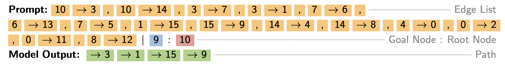
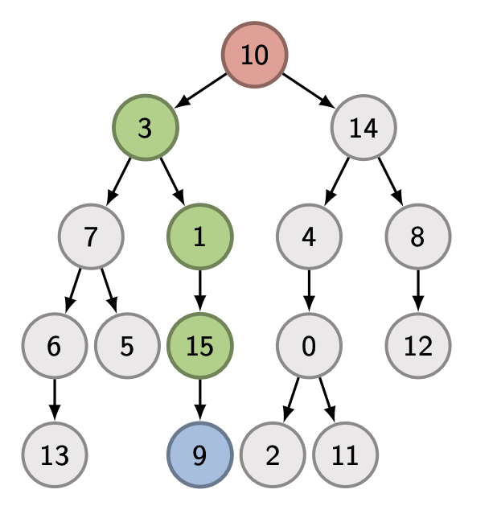

{header('Circuit Discovery')}

<div>
  <h5>October 17, 2024 • <em>Philip Yao, Nikhil Prakash</em></h5>

  As interpretability researchers, we are often interested in understanding the
  underlying mechanisms with which deep neural networks perform various kinds of
  tasks. However, mechanistic interpretability works, before 2022, primarily
  focused on understanding some specific feature(s) or neuron(s) in the model
  using techniques like probing, causal probing and activation patching (or
  causal tracing), rather than investigating the entire end-to-end circuit
  responsible for performing a task (<a
    href="https://www.pnas.org/doi/full/10.1073/pnas.1907375117"
    >Bau et. al</a
  >, <a href="https://arxiv.org/abs/2006.00995">Elazar et. al</a>,
  <a href="https://arxiv.org/abs/2209.02535">Dar et. al</a>, <i>inter alia</i>).
  The landscape started in change in 2022, when a couple works explored the
  entire circuit for synthetic tasks. Here, we will explore three of revelant
  works, but there are multiple papers that discover the underlying circuit for
  other tasks, such as
  <a href="https://arxiv.org/abs/2402.14811">Prakash et. al</a>,
  <a href="https://arxiv.org/abs/2305.00586">Hanna et. al</a>,
  <a
    href="https://www.lesswrong.com/posts/u6KXXmKFbXfWzoAXn/a-circuit-for-python-docstrings-in-a-4-layer-attention-only"
    >Stefan et. al</a
  >, <a href="https://itch.io/jam/mechint/rate/1889871">Mathew et. al</a>.

  <h2>
    Interpretability in the Wild: a Circuit for Indirect Object Identification
    in GPT-2 small
  </h2>
  <p>
    <a href="https://arxiv.org/pdf/2211.00593">This paper</a> was published at
    ICLR 2023.<br />
    <strong>Kevin Wang</strong> Freshman at Harvard (work done at Redwood
    Research)<br />
    <strong>Alexandre Variengien</strong> AI Safety Researcher at EffiSciences
    (work done at Redwood Research)<br />
    <strong>Arthur Conmy</strong> Research Engineer at Google DeepMind (work
    done at Redwood Research)<br />
    <strong>Buck Shlegeris</strong> CTO of Redwood Research<br />
    <strong>Jacob Steinhardt</strong> Assistant Professor at UC Berkeley<br />
  </p>

  <h3>What is a circuit?</h3>
  {img("images/circuit.png", 80)}
  <p>
    If we think of a model as a computational graph M where nodes are terms in
    its forward pass (neurons, attention heads, embeddings, etc.) and edges are
    the interactions between those terms (residual connections, attention,
    projections, etc.), a circuit C is a subgraph of M responsible for some
    behavior (such as completing the IOI task).
  </p>

  <h3>Experimental Setup</h3>
  <ul>
    <li>
      The indirect object identification task sentence contains two clause: 1)
      Initial dependent clause, e.g.
      <em>When Mary and John went to the store</em> and 2) Main clause, e.g.
      <em>John gave a bottle of milk to</em>. The model should generate
      <em>Mary</em> as the next token. In this example, <em>Mary</em> is the
      indirect object (IO) and <em>John</em> is the subject (S).
    </li>
    <li>
      GPT-2 small a decoder-only transformer model was used for the anlaysis.
    </li>
    <li>
      They primarily used <em>logit difference</em> to quantify the performance
      of the model with/without any intervention.
    </li>
  </ul>

  <h3>Discovered Circuit for IOI task in GPT2-small</h3>
  {img("images/IOI_circuit.png", 80)}

  <ul>
    <li>
      <em>Duplicate Token Heads</em>: These heads occur at the S2 token and
      primarily attend to the S1 token. These heads write into their
      corresponding residual stream that this token has already occurred in the
      previous context.
    </li>
    <li>
      <em>S-Inhibition Heads</em>: These heads occur at the END token and attend
      to the S2 token. The information that these head write into the END token
      residual informs the query vectors of the <em>Name Mover Heads</em> to not
      attend to the S1 token.
    </li>
    <li>
      <em>Name Mover Heads</em>: These heads are also present at the END token
      and attend to the IO token in the main clause. They copy the name
      information from the IO token residual stream and dump it into the END
      token residual stream which gets generated as the next token.
    </li>
    <li>
      <em>Previous Token Heads</em>: These heads copy information about the
      token S to token S1+1, the token after S1.
    </li>
    <li>
      <em>Induction Heads</em>: These heads are present at the S2 token and
      attend to the S1+1 token. They perform the same function as the
      <em>Duplication Token Heads</em>.
    </li>
    <li>
      <em>Backup Name Mover Heads</em>: These are interesting set of heads. They
      become active only when the <em>Name Mover Heads</em> are knockout out
      using ablation.
    </li>
  </ul>

  <h3>Circuit Evaluation</h3>
  <p>
    Path patching algorithm is used to extract the IOI circuit present in
    GPT2-small model. However, how do we know that the discover circuit is
    indeed the correct one? Hence, this paper performs evaluation of the
    identified circuit using metrics like <em>Faithfulness</em>,
    <em>Completeness</em>, and <em>Minimality</em>.
  </p>
  <p>
    Faithfulness measures how much of the model performance can be recovered by
    the circuit itself. Formally, it is computed using the equation \(F(M) -
    F(C)\), where \(F\) is the logit difference measure. They found that the
    identified circuit has a faithfulness score of \(0.46\), which is \(13%\) of
    \(F(M)=3.56\), indicating that the circuit can recover \(87\%\) of the model
    performance.
  </p>
  <p>
    Completeness measures whether the circuit contains all the model components
    that are involved in the computation or is it missing some important ones.
    Mathematically, the Completeness is computed using the equation \(F(C
    \backslash K)-F(M \backslash K)\), for every subset \(K \subset C\). If a
    circuit is complete, then the value should be small. However, calculating
    the metric for every possible \(K\) is computationally intractable, then the
    authors use sampling techniques to get an approximation of \(K\).
    {img("images/completeness.png", 80)}
  </p>
  <p>
    In order to check if the discovered circuit contains redundant components,
    authors defined the <em>Minimality</em> metrics. Formally, it is defined as:
    for every node \(v \in C\) there exists a subset \(K \subseteq C \backslash
    \{v\}\) that has high minimality score \(|F(C \backslash (K \cup \{v\}) -
    F(C \backslash K))|\). {img("images/minimality.png", 80)}
  </p>

  <h2>
    A Mechanistic Analysis of a Transformer Trained on a Symbolic
    Multi-StepReasoning Task
  </h2>
  <p>
    <a href="https://arxiv.org/pdf/2402.11917">This paper</a> was published in
    ACL 2024.<br />
    <strong>Jannik Brinkmann</strong> Work done at University of Mannheim as a
    PhD<br />
    <strong>Abhay Sheshadri</strong> Work done at Georgia Tech as an
    Undergrad<br />
    <strong>Victor Levoso</strong> Independent Researcher<br />
    <strong>Paul Swoboda</strong> Work done at University Düsseldorf as a
    Professor <br />
    <strong>Christian Bartelt</strong> Work done at University of Mannheim as a
    Managing Director <br />

    <br /><br />

    The purpose of this paper is to determine how a transformer language model
    solves a reasoning task. They use a binary tree traversal task to analyze
    the model's behavior. The authors find that the model uses a backward
    chaining algorithm to solve the task. They also show that the model uses a
    deduction head to copy the source node to the current position. The authors
    also show that the model uses a parallel backward chaining algorithm to
    solve the task when the goal node is more than one node away. The authors
    also show that the model uses a rank-one update to merge the subpaths
    together. They make these discoveries by utilizing existing techniques The
    article uses linear probes, activation patching, and causal scrubbing to
    analyze the model's behavior. In both activation patching and causal
    scrubbing, the author intervenes during the model's inference by replacing
    activations of a component of interest with activations of that same
    component during a different input. This impacts the model's loss and
    logits. In causal scrubbing the loss is then used for this performance
    metric: \(L_{CS} = (L_{scrubbed} - L_{random})/(L_{model} - L_{random}) \).
    where \(L_{model}\) is the test loss of the trained model, \(L_{random}\) of
    a model that outputs uniform logits, and \(L_{scrubbed}\) of the trained
    model with the chosen activations resampled
  </p>

  <h3>The Reasoning Task</h3>
  <p>
    The training dataset is a binary tree \(T=(V,E)\). The model is given an
    edge list, root node, and goal node. The model needs to predict the path
    from the root node to the goal node. Notice that this path is unique. See
    the two figures below. The first one shows the task, and the second one
    shows the tree structure.

    
    Figure 1. A -> B is an edge from node A to node B. Edges are separated by a
    comma. The goal node and root node are also included.
    <br />
    
    <br />
    Figure 2. The red node is the root node and the blue node is the goal node.
    The green nodes represent the intermediate path
  </p>

  <h3>Model Specifications</h3>
  Authors trained a decoder-only tranformer with 6 layers, where each layer has
  1 attention head and a MLP subblock. It is 1.2 million parameter, trained on
  150,000 training examples. It could achive an accuracy of 99.7% on 15,000
  unseen examples using the extract sequence matching metric.

  <h3>The Backward Chaining Algorithm</h3>
  <p>
    Backwards chaining is a term from symbolic AI which the model's algorithm
    shares similarities to. The model's algorithm is as follows:
  </p>

  <ul>
    <li>
      In the first transformer layer, for each edge [A]->[B] it copies the
      information from [A] into the residual stream at position [B].
    </li>
    <li>The model copies the target node [G] into the final token position.</li>
    <li>
      The authors terms the heads that perform the following operation in each
      layer as "deduction heads." In a given layer at the current position the
      model will find the source/parent node and copy it to the current
      position.
    </li>
    <li>
      This is repeated in each layer, allowing the model to traverse up the tree
    </li>
  </ul>

  <p>
    However, this mechanism is limited by the number of layers present in the
    model, since one layer is needed to traverse a single node in the tree.
  </p>

  <h3>Path Merging</h3>
  <p>
    Authors found that there are <em>Register Tokens</em> that do not contain
    any valuable semantic information, but the model uses these tokens as the
    working memory to store information about other subpaths in the tree. These
    other subpaths stored on regiter tokens are later merged at the last token
    when an overlaping subpath is found for the subpath with goal node.
    {img("images/register_token.png", 80)}
  </p>

  <h3>One-Step Lookahead</h3>
  <p>
    Finally, authors found another mechanism which identifies child nodes of the
    current position and increases the prediction probabilities of the children
    that are not leaf nodes of the tree. Attention heads in the last two layers
    were primarily responsible for performing this mechanism.
    {img("images/lookahead.png", 80)}

    <em>Nikhil's Opinion</em>: Although, authors have performed causal
    experiments for individual submechanism, the results would be more
    convincing if they conducted a causal evaluation of mechanism responsible
    for performing this task.
  </p>

  <h3>How they interpret the computations</h3>
  <p>
    The authors are able to use linear probes to extract both the source and
    target tokens [A][B] from the residual stream activations at the position of
    the target tokens after the first transformer layer.
    <br />
    They hypothesize that the "attention head of layer l is responsible for
    writing the node that is l - 1 edges above the goal into the final token
    position in the residual stream. This implies that the attention head in
    layer l should be consistent across trees that share the same node l - 1
    edges above the goal." They use causal scrubbing to verify this.
  </p>

  <h2>
    Does Circuit Analysis Interpretability Scale? Evidence from Multiple Choice
    Capabilities in Chinchilla
  </h2>
  <p>
    <a href="https://arxiv.org/abs/2307.09458">This paper</a> is unpublished.<br />
    <strong>Tom Lieberum</strong> Works at DeepMind<br />
    <strong>Matthew Rahtz</strong> Works at DeepMind<br />
    <strong>János Kramár</strong> Works at DeepMind<br />
    <strong>Neel Nanda</strong> Works at DeepMind<br />
    <strong>Geoffrey Irving</strong> Works at DeepMind<br />
    <strong>Rohin Shah</strong> Works at DeepMind<br />
    <strong>Vladimir Mikulik</strong> Works at DeepMind<br />
  </p>

  <h3>Motivation</h3>
  <p>
    This paper argues that ciruit analysis has multiple wasknesses. Two of them
    being: 1) Models studied in the existing literature are relatively small and
    2) Most of existing works focuses on identifying model components that are
    causal linked to performing a particular task, but neglects the semantic
    information flowing through those model components. To overcome these
    shortcomings, this paper investigates 70B Chinchilla model on
    multiple-choice question answering tasks, specifically MMLU. Further, they
    have proposed a technique to understand the semantics of model components by
    compressing query, key, and value information subspaces and using it to
    analyse their semantics across different counterfactual examples.
  </p>

  <h3>Experimental Setup</h3>
  {img("images/MMLU.png", 80)}
  <ul>
    <li>
      This work studies multiple-choice question-answering using a subset of the
      MMLU benchamark.
    </li>
    <li>
      Chinchilla 70B a decoder-only transformer with 80 layers and 64 attention
      heads is investigated.
    </li>
    <li>They use logit of the option labels as the metric for analysis.</li>
  </ul>

  <h3>MCQ Answering Circuit in 70B Chinchilla</h3>
  <p>
    {img("images/MMLU_circuit.png", 80)} First, the authors utilize
    <em>Direct Logit Attribution</em> to identify attention heads that have the
    highest direct effect on the predicted token. Then, they selected the top 45
    attention heads, since they were able to explain 80% of the option token
    logits. They also showed that these heads could recover most of the model
    performance and loss. To further analyse the attention heads with highest
    direct effect, they visualized their value-weighted attention pattern. Based
    on head's pattern, they categorized them into 4 groups:
  </p>
  <ol>
    <li>
      <em>Correct Letter Heads</em>: These heads attend from the final position
      to the correct option label.
    </li>
    <li><em>Uniform Heads</em>: These heads roughly attend to all letters.</li>
    <li>
      <em>Single Letter Heads</em>: These heads mostly atend to a single fixed
      letter.
    </li>
    <li>
      <em>Amplication Heads</em>: These heads are hypothesized to amplify the
      information already present in the residual stream.
    </li>
  </ol>
  <p>
    {img("images/attn_pattern.png", 80)} Although, these are half baked results,
    it still shed light on an interesting mechanism that the model is not
    passing the label information to option tokens from which the last token
    could just fetch it, instead the model is first deciding on the correct
    option and then finally fetching the correct label info.
  </p>

  <h3>Semantics of Correct Letter Heads</h3>
  <p>
    In order to understand the semantics of the Correct Letter heads, authors
    applied Singular Value Decomposition (SVD) on the residual of key and query
    vectors cached across 1024 examples. They found that top-3 singular vectors
    were sufficient to capture most of the variance. They found the low-rank
    approximation of the key and query information had similar performance as
    the full-rank ones. They projected the query and key residual onto this
    3-dimensional subspace for visualization. A 3-D version can be accessed
    <a href="https://sites.google.com/view/does-mechinterp-scale">here</a>.
    {img("images/projection.png", 80)} Finally, they come up with specific
    mutuations of the original examples to determine which piece of information
    is most critically present in the QK-subspace. They found that the subspace
    primarily contains "n-th item in an enumeration" information, but also some
    information that is specific to the optin tokens.
  </p>
  <p>
    By utilizing these investigating on the semantics of the Correct Letter
    heads, the authors were able to come up with the following psuedocode for
    the functionality of these heads. {img("images/code.png", 80)}
  </p>

  <h2>Code Resources</h2>

  <p>
    Try this
    <a href="{colab_link('colab/mech_interp.ipynb')}">colab notebook</a> to
    investigate the IOI circuit with GPT2-small yourself. You can use it to
    perform direct logit attribution, activation patching and attention pattern
    visualization to understand the flow of information.
    <i
      >This notebook has been inspired from Neel Nanda's exploratory analysis
      demo</i
    >.
  </p>

  {footer()}
</div>
